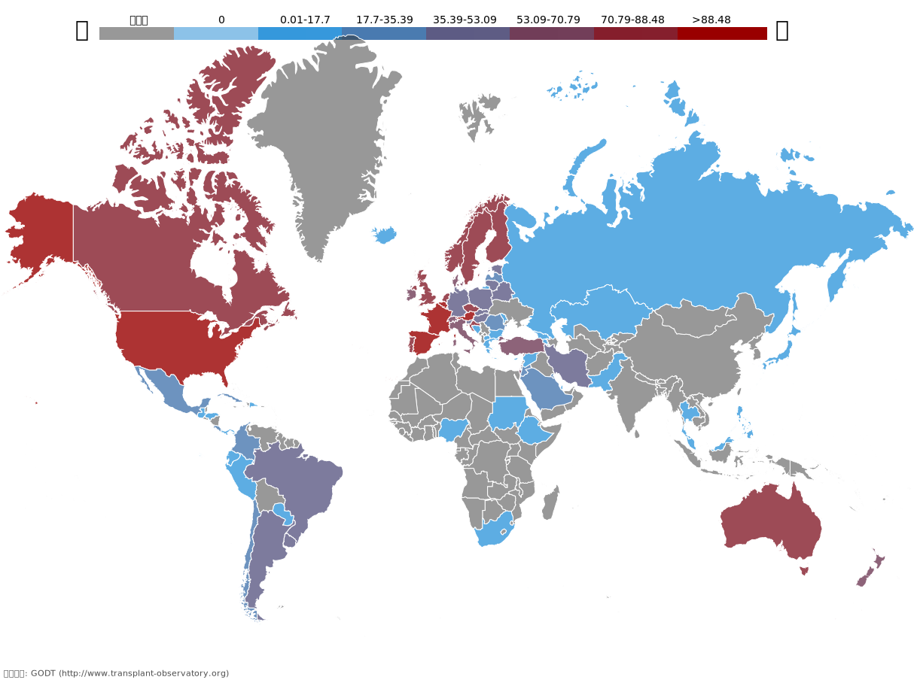

香港器官捐贈制度
的現狀與未來
1:13的供應與需求比例下
香港要如何才能解決器官短缺問題？
世界上各國現行的器官捐贈制度大致有兩種，分別為自願捐贈制度與預設默許器官捐贈制度。自願捐贈制度是指，想要在死後捐出器官的人需要在生前向政府登記表明捐贈意願，死後方能被納入器官捐贈者的考量。而預設默許制度與之相反，即若公民生前若未向政府登記表明不想捐出器官，則便被視為有意願捐出器官。預設默許制度又分為軟性與硬性，目前實行預設默許制度的國家大多實行軟性預設默許制度，即使公民在生前未向政府登記表明不想捐出器官，但若其家屬反對將其器官捐出，醫院便不會將死者器官用於捐贈移植。而硬性則是指，無論死者家屬反對與否，是否將死者器官用於捐贈只會參照死者生前是否曾登記不成為捐贈者。以上制度的具體實施流程如下圖：
香港、中國大陸與大多數亞洲地區目前實行的器官捐贈制度是自願捐贈制度，而大多數歐盟國家與美國數個洲實行的是軟性預設默許制度，新加坡與法國則是少有的實行硬性預設默許器官捐贈制度的國家。
同樣是實施預設默許的國家，實行軟性制度的西班牙和法國器官捐贈率高，而實行最嚴格的硬性制度的新加坡卻器官捐贈率很低；法國在實行了幾十年軟性制度之後在去年改成了硬性制度。文化背景基本相似的德國和奧地利，實施預設默許制度的奧地利器官捐贈率遠高於實施自願捐贈制度的德國。中國同樣實行自願捐贈制度，2015年停止捐用死刑犯器官后，加大力度推廣器官捐獻，但收效甚微，截止2018年5月3日，14億人口僅有42萬人進行器官捐獻志願登記。香港為世界上器官捐贈率最低的地區之一，香港食物及衞生局局長高永文於2015年表示，會考慮仿效外國立法規定市民「預設默許」（opt－out）捐贈器官，引起巨大爭議。
那麼，相比於自願捐贈制度更有導向性的預設默許制度、相比於軟性更有強制性的硬性預設默許制度，真的會帶來更高的器官捐贈的數量嗎？影響器官捐贈數量的因素有哪些？香港是否應該學習西班牙、法國實行預設默許器官捐贈制度？本文將從典型國家案例分析入手，探討捐贈制度與器官捐贈率之間的關係，展望香港未來器官捐贈制度的發展。
世界各國器官捐贈率一覽
下圖為GODT（全球器官捐贈數據庫）所供數據制成的全球器官捐贈數量水平圖。可見歐洲國家大多處於較高捐贈水平，亞洲則較低。
德國與奧地利對比
據學術雜誌《Science》的報告，同為為文化背景相近的歐盟國家，採用「自願捐贈制度」的德國，「同意捐贈器官率」只有12%，而採用「預設默許」的奧地利則高達99.98%。而兩國每百萬人中最終將器官捐贈出去的人數也有一倍之差。從下圖可以看出，奧地利的每百萬人中捐贈者人數有逐年上升的趨勢，而德國則相反。
香港器官短缺現狀
二零零八年十一月，香港政府推出中央器官捐獻登記名冊，截止至2009年末，共有逾45000人進行登記，但隨後每年登記人數逐漸穩定值25000人左右，為鼓勵市民進行器官捐贈，二零一六年香港政府成立器官捐贈推廣委員會，同年中央名冊登記人數增長13293人，達到52550人，創下歷史新高。
但增長速度緩慢的器官捐贈數量並不能滿足對於器官的需求。以腎臟為例，截止至2017年12月31日，香港共有2153人輪候腎臟移植手術，而2017年全年只有78例腎臟捐贈，平均需輪候51個月，最久可達351個月，可用器官與所需器官比例近乎1：27.6 。
點擊下方圖片查看香港目前器官短缺現狀：（資料來源:器官捐贈的主題性住戶統計調查結果)
預設默許是否一定行之有效？
預設默許捐贈制度會大幅度提升器官供應者的數量。此制度在其他國家也的確取得了巨大成效。比利時推行此政策三年之間，腎臟捐贈由每百萬人18.9宗增加至41.3宗。奧地利實施此政策四年，器官捐贈者由每百萬人中4.6人增加逾倍至10.1人。
但預設默許制度並非一定行之有效。現時，預設默許制度下分為「軟性」與「硬性」，西班牙採用軟性預設默許制度，即為手術前諮詢且尊重捐獻者家屬意見，人性化關懷為器官捐獻的實行加分不少，使得近30年來，西班牙一直位居器官捐獻榜首，根據國際器官捐贈與移植登記組織（IROdat）的數據顯示，2017年，西班牙每百萬人中有46.9人捐出器官，而香港每百萬人中只有6人進行器官捐獻，不足西班牙的八分之一。
而新加坡則採用硬性預設默許制度HOTA(Human Organ Transplant Act)，新加坡居民于21歲被默認為器官捐獻者，如不拒絕該安排，器官即會于腦死亡后被捐出，而在此過程中，家屬意見將完全不予考慮。硬性故新加坡長期存在醫生拒絕家人請求「強取」器官的社會矛盾事件，而器官捐贈率也一直位居倒數。
預設默許在港推行難
根據政府調查，32.5%的香港市民願意捐獻器官，但目前只有3.78%的人進行了器官捐獻登記，在問卷調查中，近半人表示器官捐贈不是當務之急，故沒有進行登記，推行預設默許制度能將持該觀念的人有效轉化為可用器官，粗略估計至少可增加210萬後備器官。
但預設默許制度在香港推行並非易事，在「主題性住戶統計調查第63號報告書」中，35.9%的人表示不支持該制度，在我們發放的300份調查問卷中，亦有近三分之一的參與者對預設默許制度提出反對意見，「香港法律制度令該制度存在爆發矛盾的潛在風險」、「非自願，不尊重個人選擇權」、「對不知情的人來講是變相強迫」、「與傳統觀念相背」，思想與
器官捐贈要腦死亡 器官捐贈團體對預設默許機制有保留
在香港，只有腦死亡的人才可以把器官捐贈出去。現時政府宣傳上無特別指明是哪一種死亡狀態才可以捐器官，但實際上並非所有人過身都可以捐器官。要「腦死亡」的人才可以捐器官。大部分的「腦死亡」個案都是因為腦幹受損，如中風，有交通意外撞到頭，因此大部分都是很突然的情況。香港平均每年有40000多人過身，但每年不足100人腦幹死亡。基本上，除了眼角膜，所有器官都要靠腦死亡才可以捐贈。
香港移植運動協會香港區大使黃炎華表示，對預設默許器捐贈有保留。「判定腦死亡時候，有儀器的幫助下，死者的身體還是暖的，死者仍然會有心跳。大部分家屬在這個時候都不相信自己的親人已經過身了。因此，要他們在那一刻相信醫生的判斷是很困難的。」
有了預設默許機制之後，他擔心會令到港人會更抗拒器官捐贈。「因為這個機制實行的方式是，你不反對，我就拿（器官走了），這樣會令到很多對器官捐贈不太熟悉的人，即使未考慮清楚，也先去申請了反對，到想清楚了，再去撤銷，反而會令更多人沒有去捐贈器官。」
黃炎華認為，要令港人更接受器官捐贈，應該由捐贈者的家人入手。因為在香港推展器官捐贈的最大阻力是他們的家人，和港人避談生死的觀念有關。他指出，很多時候逝者的家人都不知道他們的意願，所以就乾脆不捐他們家人的器官出來。「如果可以在事前告訴家人自己的意願，相信可以得到家人的諒解，大部分人也會尊重本人的意願。」黃炎華期望可以將器官捐贈變得如捐血般普遍，並對器官捐贈的推廣工作感到樂觀。
學校教育或為推行器官捐贈新思路
部分未登記器官捐獻市民表示不了解如何進行捐獻，為加強市民對於器官捐贈的認識與關注，推行相應學校教育或許更有效。現就讀于香港浸會大學一年級的21歲馬來西亞學生丁敏表示，她早在2012年就已登記自願捐獻器官，「死後器官也不能再用了，如果可以讓別人繼續活下去或者有更好的生活，我覺得很好」。
丁敏所就讀的中學有鼓勵學生捐血與捐獻器官的傳統，不僅平日會邀請醫生來開座談會，更是會在家長日于禮堂內舉辦捐血運動和器官捐贈註冊活動，鼓勵學生和家長登記器官捐贈，「登記後還是蠻開心的，感覺有機會做好事了」，但她也自認如果自己對器官捐贈沒有預先了解，看到街道上的器官捐贈廣告也并不會給予過多關注。黃炎華也表示,期待香港將該方面教育納入學校常規教育。